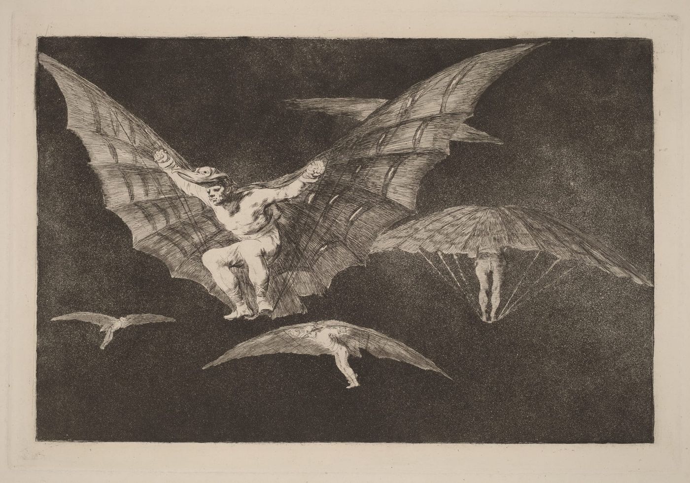

下一个 Flat 时代

二十年前《世界是平的》打通的只是信息与连接的管道；站在 2026 年的今天，从微软与谷歌的自愿买断、漫过软硬件的许愿编程、逆向一切黑盒的 REA，直到被递归自我改进（RSI）淹没的 Taste，从想法到现实之间的一切中间层正在被彻底抹平。
阅读全文 →关于 AI、系统演进与创造方式的思考记录。
二十年前《世界是平的》打通的只是信息与连接的管道；站在 2026 年的今天，从微软与谷歌的自愿买断、漫过软硬件的许愿编程、逆向一切黑盒的 REA，直到被递归自我改进（RSI）淹没的 Taste，从想法到现实之间的一切中间层正在被彻底抹平。
阅读全文 →
在模型能力每隔几周就会跃升一次的时代，单靠许大愿极易引发系统爆炸。我们需要用高度、深度和广度打开想象力去 Think Big，同时用边界极窄的大积木与微雕刻，像组装一台光刻机一样稳住脚步，去 Build from Small。
阅读全文 →